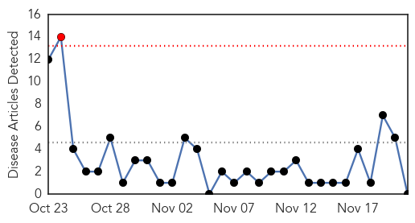
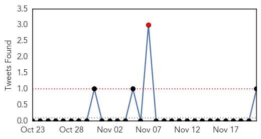
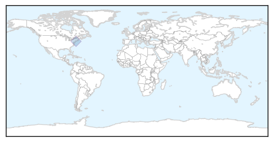
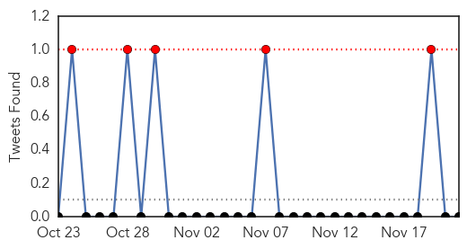
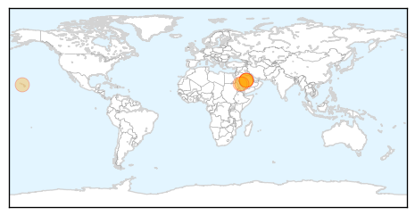

Cholera
30-Day Web Trend
1 alerts, 0 warnings

30-Day Twitter Trend
1 alerts, 0 warnings

Article Locations
Article Confidences

Top Articles:
-
No articles found for Nov 21, 2014
Top Tweets:
- 0.902
- RT: Both Ebola & cholera feed on weak public health systems. Cholera response coordinator says DontforgetHaiti http://t.co/ZC9rgXz7LB
MERS
30-Day Web Trend
0 alerts, 0 warnings

30-Day Twitter Trend
5 alerts, 0 warnings

Article Locations
Article Confidences

Top Articles:
- 0.999
- Questions linger as Saudi battles MERS - 808 infected, killed 346 in Saudi Arabia - Kuwait Times
- 0.999
- Saudi Arabia tackles MERS virus, still hunting source
- 0.998
- Saudi tackles Mers virus, still hunting source
- 0.998
- MERS virus: Scientists still hunting source
- 0.997
- Saudi Arabia tackles MERS virus, still hunting source
- 0.991
- Pig virus strikes Oahu pig farm
- 0.986
- Saudi’s Ministry of Health says three more die from MERS
Top Tweets:
-
No tweets found for Nov 21, 2014